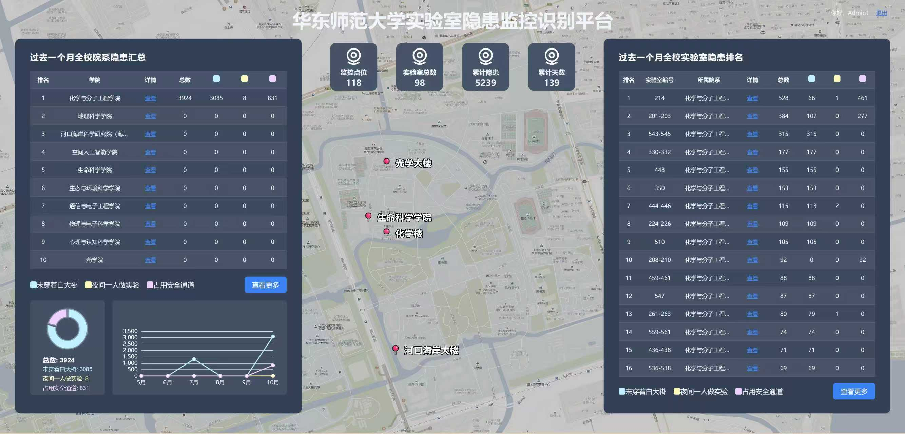
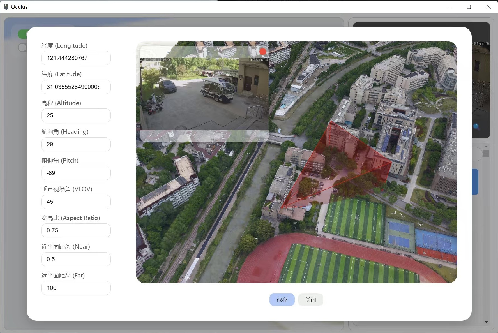
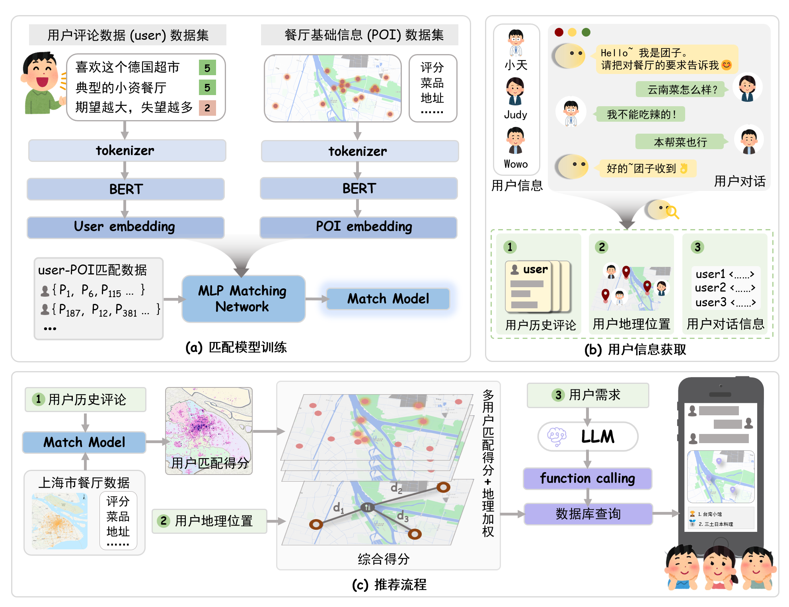
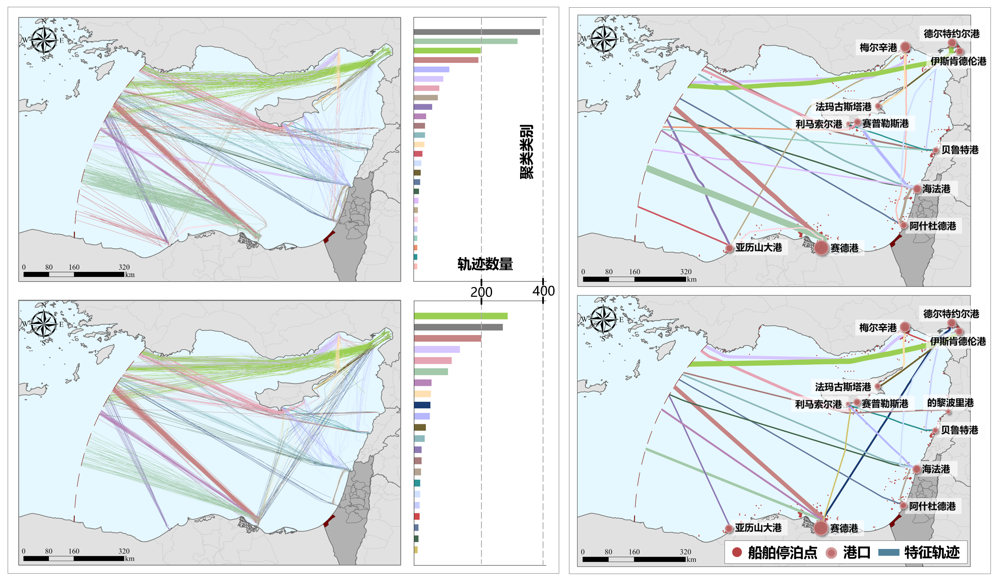
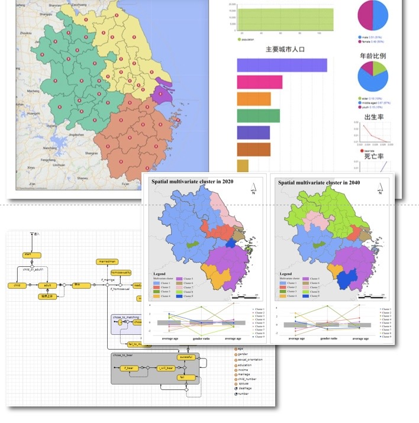

Fang Tianyao
欢迎来到我的博客！
非常欢迎各位访客与我交流：
个人邮箱： Fty643737159@gmail.com
个人微信：
教育背景
华东师范大学 | 2024 - 2027
专业： 地图学与地理信息系统
相关工作： 行人重识别、桌面端实景三维软件开发
南京师范大学 | 2020 - 2024
专业： 地理信息科学
相关工作： 时空数据开发、人口发展模拟
工作 & 实习经历
腾讯(实习) | 2026
IEG - 公共技术线 - 基础技术产品部 | 后台开发
AI Agent 驱动的游戏开发平台设计。
Publications & Presentations
[Under Review] Tianyao Fang, Haiping Zhang*, Yushu Xu, Zihan Li, and Xiang Li. “Individual-centric spatiotemporal simulation model for diffusion and acculturation of multidimensional culture.” International Journal of Geographical Information Science.
Yushu Xu, Zhaoya Gong*, Tianyao Fang, Haiping Zhang, and Guo’an Tang. (2025). “Intercity human dynamics during holidays through the lens of travel movement–intention interactions in the hybrid physical–virtual space.” International Journal of Geographical Information Science, 39(11), 2541–2569. [JCR Q1]
Zihan Li, Haiping Zhang*, Yushu Xu, Tianyao Fang, Haoran Wang, and Guo’an Tang. (2024). “How does cultural distance affect tourism destination choice? Evidence from the correlation between regional culture and tourism flow.” Applied Geography, 166, 103261. [JCR Q1]
[Oral Presentation] 3rd International Workshop on Geographic Modeling and Simulation, Nanjing, China.
Title: Individual-centric spatiotemporal simulation model for diffusion and acculturation of multidimensional culture.
项目 & 比赛
AI Agent 驱动的游戏开发平台设计 | 2026
多阶段 WorkFlow 编排引擎，由多个 Agent 驱动，并添加程序化校验修复机制与 Hook 系统，实现“规划 - 资产配置 - 代码开发 - 用例测试 - 运行测试”的游戏开发全流程框架搭建。

实验室视频安全智能检测平台 | 2025
面向高校实验室违规行为检测的智能化安全监控平台，设计并实现了采集-推理分离的集群化架构、扇入/扇出并行推理与声明式检测器模版引擎等架构。

基于实景三维的户外摄像头视域演算与匹配软件 | 2025
基于 Node.js, Vue, Electron, Cesium 开发户外摄像头视域演算与匹配桌面端软件，并开发配套核心算法。

第五届美团商业分析精英大赛 | 2025
设计并训练了一个基于双塔匹配模型以及地理加权的多人餐厅推荐模型。

基于 AIS 数据的船舶轨迹提取与聚类算法 | 2024
设计基于 AIS 大数据的船舶轨迹提取与特征轨迹聚类算法，用于提取主要航线与分析局部海运格局变化趋势。

易智瑞杯中国大学生 GIS 软件开发竞赛 | 2022
基于多智能体的多场景中国人口结构预测模型。
